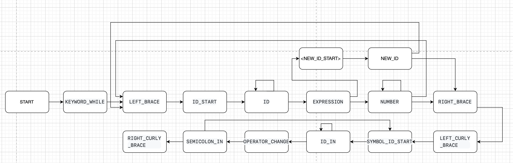

Поскольку грамматика является контекстно-свободной, то для данной грамматики в качестве метода анализа был выбран рекурсивный спуск.
В рекурсивном спуске каждой конструкции грамматики соответствует отдельный метод парсера. Такие функции вызываются в соответствии с правилами грамматики, причем иногда вызывают сами себя рекурсивно.
На рисунке 1 представлен граф рекурсивного спуска. Листинг программы представлен в приложении Б.
